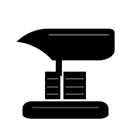
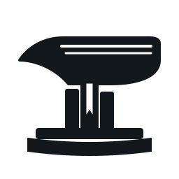
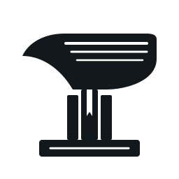

Exploraciones vectoriales puras (monocromo, con transparencia) basadas en el concepto del Yunque Forjado a partir de Libros y la raíz élfica de Tolkien (Parma = Libro / Grimorio).
Mesa plana superior con cuerno cónico extendido, cintura formada por dos lomos con nervaduras, y base gruesa de encuadernación. Fiel al balance clásico de un yunque de herrero.

Claro (64px)Base con hojas de gran códice, pilar central con tres volúmenes escalonados y marcapáginas en V cayendo por la cintura. Cuerno afilado y dinámico.

Claro (64px)Inspirado en la runa Parma de Tolkien. El arco curvo (lúva) forma el cuerno y la mesa superior del yunque con una estrella élfica en el núcleo.
Trazo vectorial estilizado al máximo, silueta limpia con cortes de hojas marcados y gran estabilidad visual en escalas ultrapequeñas (16×16).

Claro (64px)